2006年08月22日 文責：浅岡 浩子
もくじ：
化学メディアナビゲータは、様々な種類のファイルの参照を行います。
| ファイル種類 | 拡張子 | アイコン | 表示例 | 備考 |
|---|---|---|---|---|
| ３Ｄ分子 | *.mol | 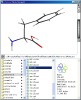 | ＭＤＬ社 分子ファイル形式 （*.mol） に対応しています。 ファイルを選択すると、３Dで分子構造が表示されます。 |
|
| 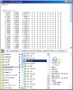 | [Alt]キーを押しながら、ファイルを選択すると、テキスト表示します。 | |||
| ２Ｄ分子 | *.2D.mol | 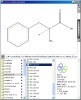 | ＭＤＬ社 分子ファイル形式 （*.mol） に対応しています。 拡張子に「.2D」を付加しておくと、デフォルトで２D表示になります。 |
|
| 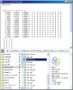 | [Alt]キーを押しながら、ファイルを選択すると、テキスト表示します。 | |||
| ３Ｄ物体 | *.lst *.wrl |
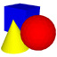 | 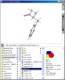 | ビューファインダ等で表示される物体の保存ファイル （*.lst） や、 VRML ファイル （*.wrl）に対応しています。 ファイルを選択すると、３Dで物体を表示します。 |
| テキスト | *.txt *.st *.html *.htm *.bat |
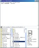 | ファイルに記述されている文字列を表示します。 | |
| イメージ | *.jpg *.jpeg *.png *.bmp *.gif |
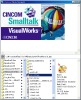 | 画像を表示します。 | |
| ムービー | *.mov *.avi *.mpg *.mpeg |
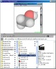 | ファイルを選択すると、 トラッカー が表示されます。 トラッカーを利用することで再生等の操作が可能になります。 |
|
| サウンド | *.mp3 *.wav |
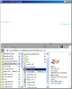 | ||
| 上記以外 | *.* | 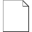 | 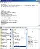 | 可読なものは、テキスト表示になります。 |
| 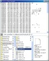 | テキスト表示不可能なものは、ダンプした内容を表示します。 |
化学メディアナビゲータを開くには、 ケモじゅんランチャー の 「Tools」->「Chemical Media Navigator」メニューを選択します。
化学メディアナビゲータの画面は以下のようになっています。
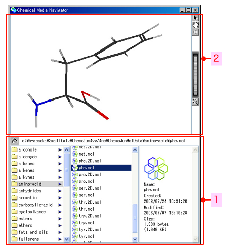
化学メディアナビゲータの画面内で、右ボタンをクリックすると、 表示しているファイルに対応したメニュー機能が表示されます。
分子ファイルを選んでいるときに表示されるメニュー機能の詳細は、「 分子ビューア 」のマニュアルを参照してください。
画像保存
分子ファイルを選んでいるときは、「File」メニューの代わりに、「Save as Image」メニューを選ぶことができます。
ビューア内に表示している状態で、画像を保存することができます。
[Shift] キーもしくは [Alt] キーを押しながらメニューを選択すると、グレースケールの画像を作成します。
表示設定
分子ファイルを開いているときに、表示方法などの設定を変更すると、他の同種ファイルを選んでも同じ設定になります。
複数のファイルを続けて表示する場合は、このナビゲータを利用すると便利です。
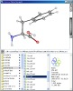 --(続けて選択)--> 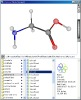 ：同じ設定で表示される
{kind=link}
{kind=link}
{kind=link}
{kind=link}
{kind=link}
{kind=link}
{kind=link}
{kind=link}
{kind=link}
{kind=link}
{kind=link}
{kind=link}
{kind=link}
{kind=link}
{kind=link}
{kind=link}
{kind=link}
{kind=link}
{kind=link}